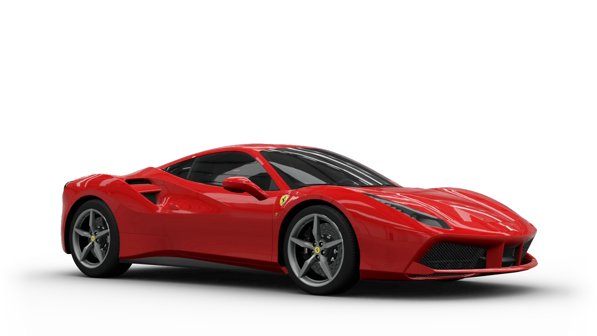

Ferrari 488 Superfast ได้รับการออกแบบใหม่ทั้งหมด และยังคงเน้นย้ำความเป็นรถสปอร์ตที่คงความเรียบอย่างคลาสสิก เส้นสายที่ชัดเจนตามแบบของเฟอร์รารี่ สะท้อนให้เห็นถึงเอกลักษณ์ในอดีต ด้วยแรงบันดาลใจของปีกที่มีรูปแบบโดดเด่นจาก เฟอร์รารี่ 308 ซึ่งถือเป็นเฟอร์รารี่รุ่นแรกที่ติดตั้งเครื่องยนต์ V8 แบบวางกลาง ที่เคยโด่งดังในอดีตเมื่อกว่า 40 ปีที่แล้ว สำหรับตัวเลข 488 ของรถยนต์คันนี้บ่งชี้ถึงหน่วยของเครื่องยนต์ ในขณะที่ชื่อ "GTB" นั้น ย่อมาจากภาษาอิตาลี คือ "Gran Turismo Berlinetta" อันเป็นชื่อที่เป็นเอกลักษณ์ของเฟอร์รารี่ ด้วยเครื่องยนต์ขนาด 4.0 ลิตร V8 DOHC 32 วาล์ว Turbo ให้แรงม้าสูงสุดถึง 670 แรงม้า วางเครื่องกลางด้านหลัง ทำความเร็วได้สูงสุดถึง 330 กม./ชม.
Ferrari 488 Superfast ให้ประสิทธิภาพสูงสุดบนสนามแข่งที่ผู้ขับขี่สามารถสนุกสนานกับการขับเคลื่อนอย่างเต็มที่แม้ว่าจะเป็นมือสมัครเล่น หรือผู้ขับขี่ที่ใช้งานในชีวิตประจำวัน นวัตกรรมใหม่ของ Ferrari 488 Superfast ที่มีการผสานนวัตกรรมของฟอร์มูล่าวัน บวกกับสุดยอดสมรรถนะอันทนทานของเครื่องยนต์จะสร้างสุนทรีย์แห่งการขับขี่แก่กลุ่มผู้รักรถสปอร์ตสายพันธุ์แท้อย่างแน่นอน